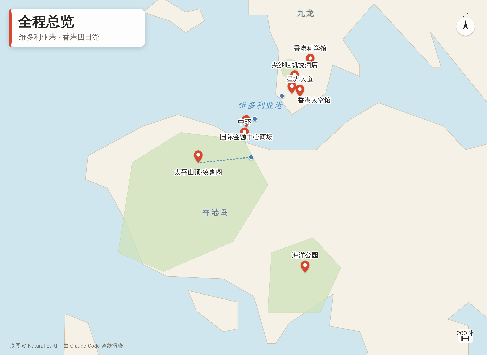
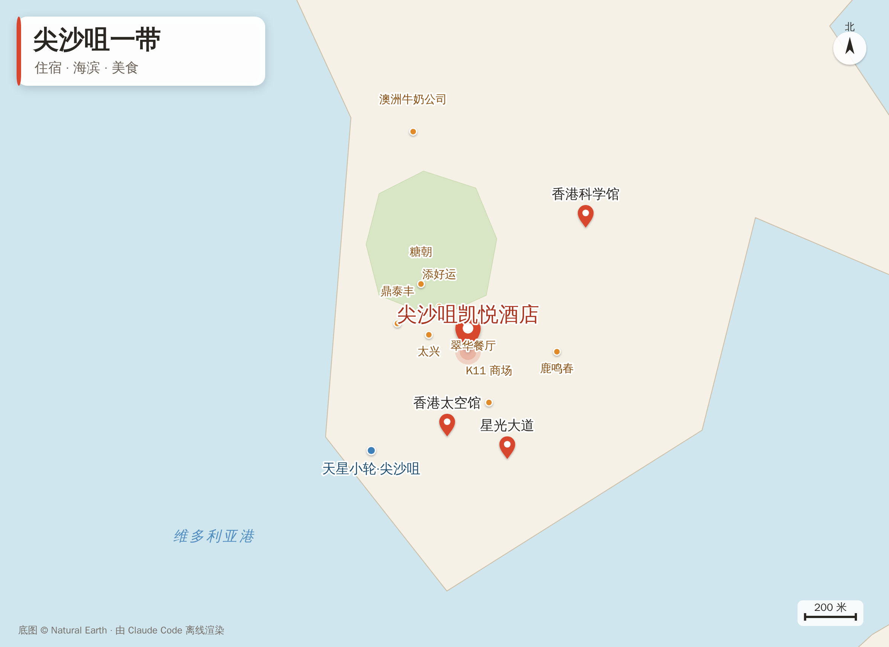
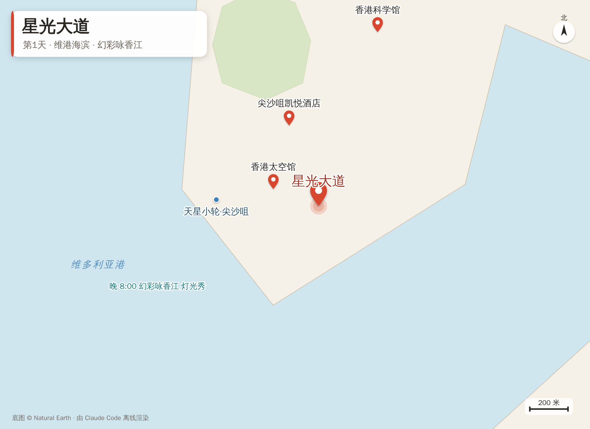
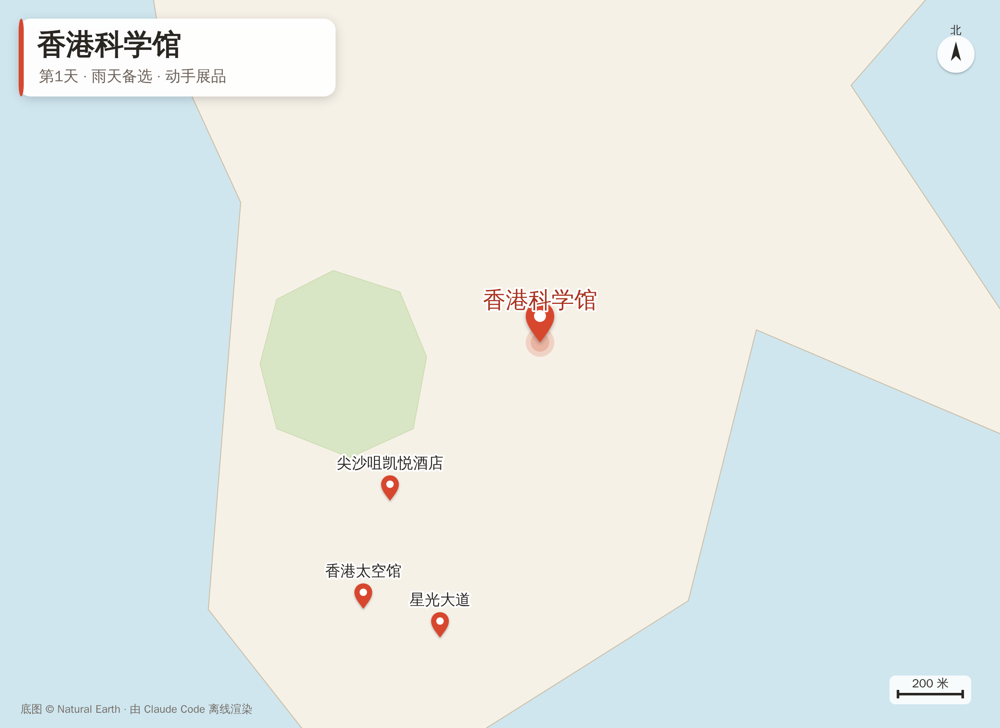
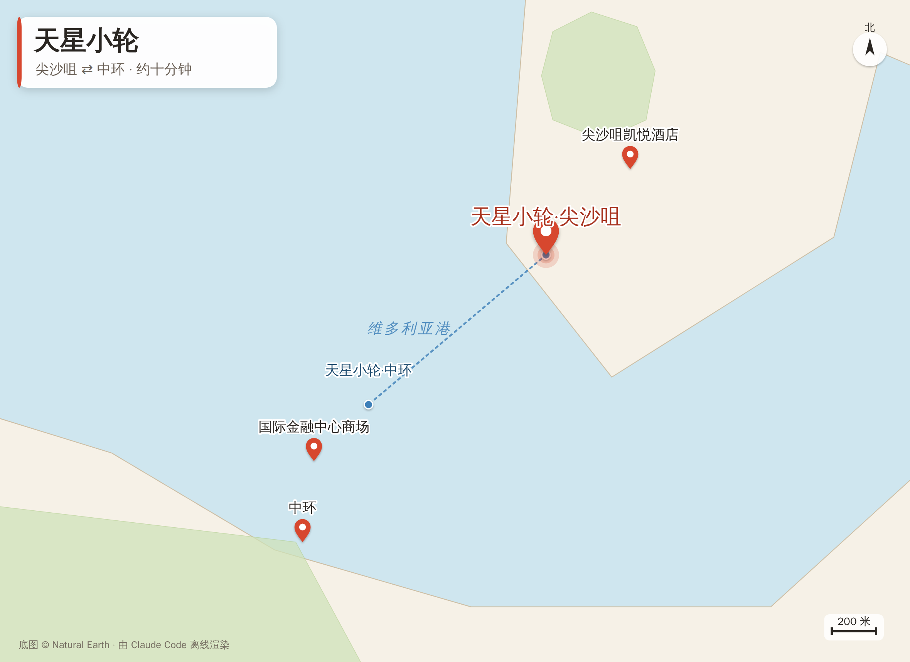
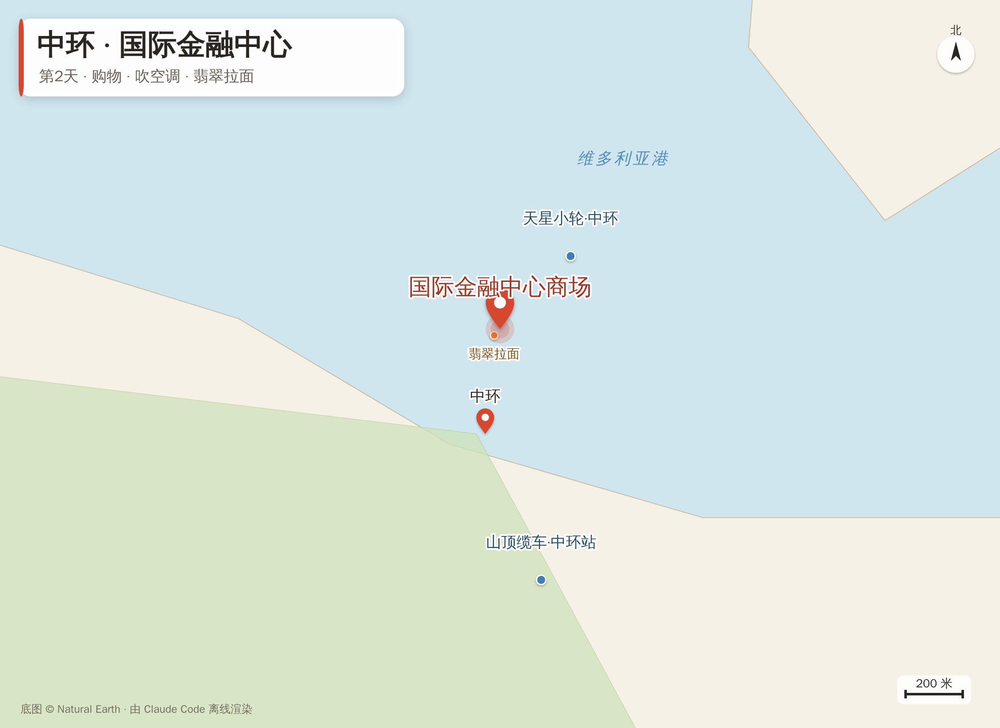
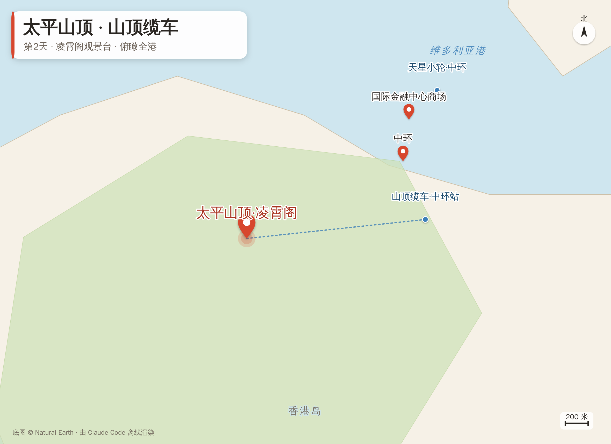
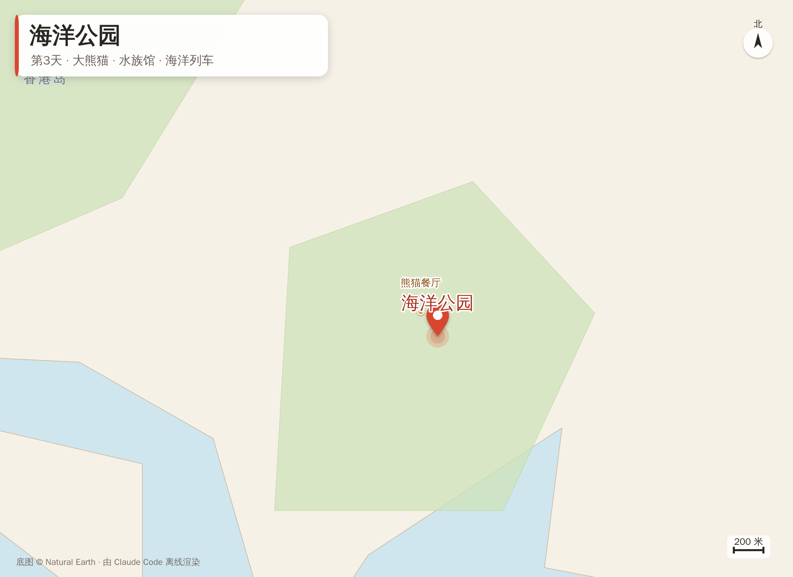
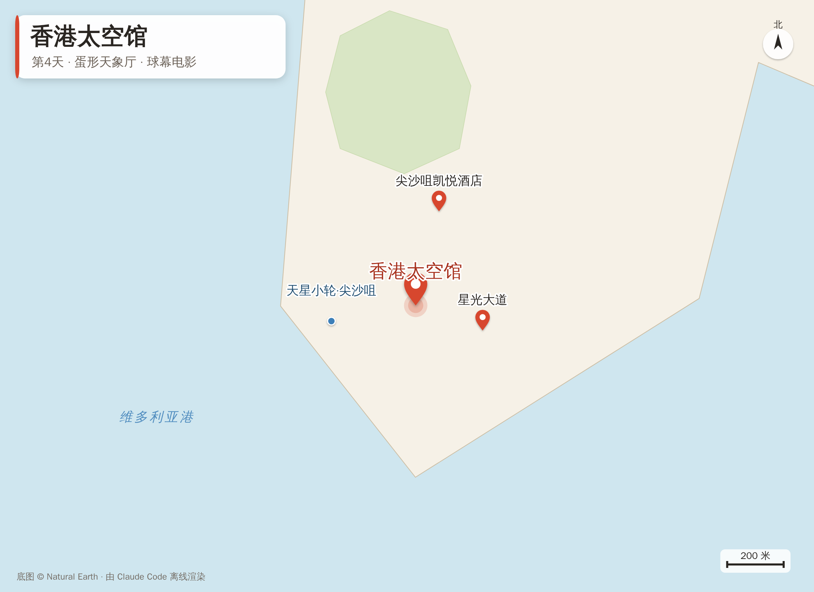
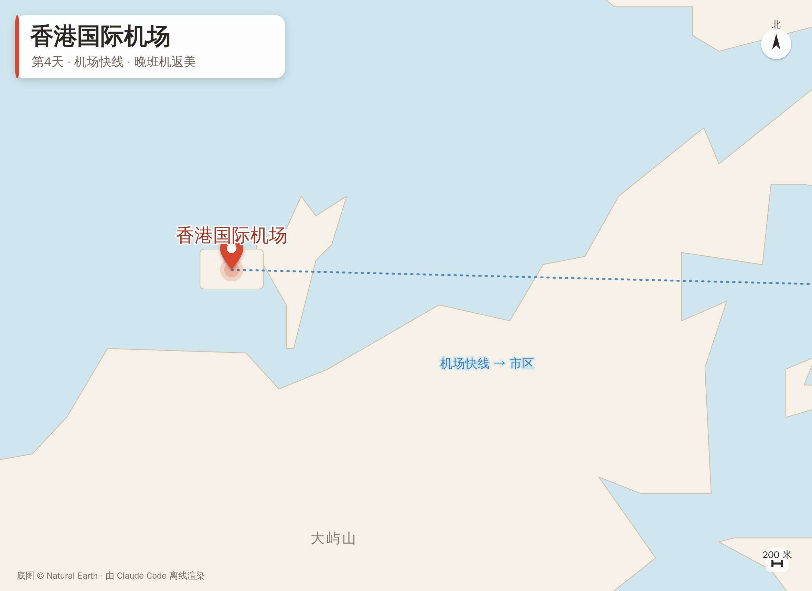

行程不赶：每天上午出去走走，中午吃饭、吹空调、歇歇脚，晚上早点回酒店休息。
住宿
尖沙咀凯悦酒店。就在地铁站楼上，挨着 K11 商场，出门吃饭、买东西、坐车都方便，下雨也淋不着。

全程总览 —— 维多利亚港两岸的主要去处

尖沙咀一带 —— 酒店、海滨与附近吃饭的地方
第1天
到香港，海边散散步
6月30日（周二）· 今天主要是赶路，不安排太多
- 从成都坐飞机到香港，先到酒店放下行李，缓一缓。
- 傍晚到海边的星光大道走走，看维多利亚港和对岸的高楼，路很平，推着小车也好走。
- 晚上八点，在海边看“幻彩咏香江”灯光秀——一栋栋高楼配着音乐亮灯，免费的。
- 要是飞机到得早，就先去旁边的香港科学馆，里头好多能动手玩的，孩子们最喜欢。
🍜 吃饭：晚上在酒店附近吃，添好运的点心，或者翠华餐厅的粥、面、奶茶，都很顺口。

星光大道 · 维港海滨 —— 晚 8:00 看幻彩咏香江

香港科学馆 —— 下雨或到得早时的备选
第2天
上太平山，逛中环
7月1日（周三）· 起得早一点，赶在人多之前上山
- 早上在酒店吃过早饭，坐天星小轮过海到中环，坐十来分钟就到，还能吹吹海风。
- 上山坐山顶缆车，到凌霄阁的观景台，从高处看整个香港的高楼和海港，就数这儿的景最好看。
- 中午在国际金融中心商场吃饭、逛街、吹空调，歇够了再走。
- 下午坐敞篷的观光巴士绕港岛转一圈，坐着看风景、吹吹风，不用走路。
- 傍晚坐船回尖沙咀，回酒店歇着。
🍜 吃饭：中午在中环吃翡翠拉面的小笼包和拉面；晚上回尖沙咀，吃太兴的烧味饭，或者鹿鸣春的北京烤鸭，一家人围着吃。

天星小轮 —— 尖沙咀 ⇄ 中环，约十分钟

中环 · 国际金融中心商场 —— 吃饭、逛街、吹空调

太平山顶 · 凌霄阁 —— 缆车上山，俯瞰全港
第3天
海洋公园，玩一整天
7月2日（周四）· 孩子们最盼的一天，动物也多
- 坐地铁过去，不用换好几趟车。
- 看大熊猫（还有熊猫宝宝）、企鹅、海狮，还有大水族馆里成千上万的鱼，慢慢看。
- 上山下山都有缆车和园里的小火车（海洋列车）坐，不用爬坡。
- 孩子们去玩适合他们的游乐项目，大人轮流陪着。
- 傍晚七点半左右，看三丽鸥卡通的灯光晚会，热热闹闹地收个尾。
🍜 吃饭：中午就在园里吃，熊猫餐厅的饭和面，或者水族馆里的餐厅，一边吃一边看鱼；晚上回尖沙咀，吃糖朝（粥、面、糖水都有）或者翡翠拉面。

海洋公园 —— 大熊猫、水族馆、海洋列车
第4天
太空馆，晚上飞回美国
7月3日（周五）· 安排得松快些，逛一逛、收拾收拾，傍晚去机场
- 上午在尖沙咀附近逛逛，买点手信带回去，把行李收拾好。
- 下午一点去香港太空馆——就是海边那栋圆圆的、像半个鸡蛋的房子。里头的天象厅放球幕电影，仰着头看，孩子们准喜欢。
- 傍晚坐机场快线去机场，晚上十点半的飞机回美国。
🍜 吃饭：早上吃澳洲牛奶公司（有名的炖奶和滑蛋）；中午吃鼎泰丰的小笼包，热乎、好消化、吃着舒服。

香港太空馆 —— 蛋形天象厅，球幕电影

香港国际机场 —— 机场快线直达，晚班机返美
🧳 几句叮嘱
- 全程都不赶，中午都留了吃饭和吹空调歇脚的时间，累了就吭声，随时坐下来歇。
- 哪天要是觉得累，少去一两个地方也没关系，玩得开心、别累着最要紧。
- 万一遇上下大雨，就改去室内的博物馆或商场，照样有得逛，不用担心。
- 出门带齐这几样：帽子、防晒、雨伞、常吃的药。香港夏天又晒又闷，雨说下就下。